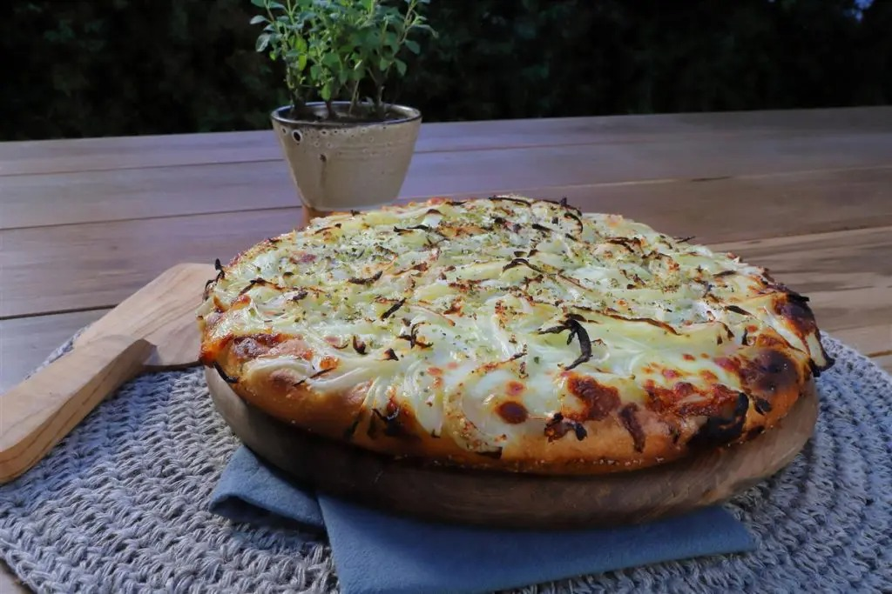

Pizza Fugazzetta

La fugazzeta, también llamada fugazetta rellena, es una variedad de pizza argentina, originada en Buenos Aires, que consiste en colocar el queso entre dos discos de pizza, a modo de relleno, sobre el cual se agrega cebolla.
Deriva de una combinación de características de la pizza napolitana (pan, salsa de tomate y queso), con la focaccia (pan con cebolla), llamada en Génova fugassa. Fue inventada por el pizzero argentino, hijo de genovés, Juan Banchero, en el barrio de La Boca, en algún momento entre 1893 y 1932, cuando se inauguró la pizzería Banchero.
Ingredientes:
Para la masa:
- Harina 000: 850 grs.
- Levadura Fresca: 20 gramos.
- Agua: 510 c.c.
- Azúcar: 10 grs.
Para los toppings:
- Cebolla cortada en pluma: 4 Unidades.
- Cebollas: cantidad necesaria.
- Muzarella rallada: 700 grs.
- Orégano: cantidad necesaria.
- Pimienta: cantidad necesaria.
- Queso rellado: 50 grs.
- Queso cuartirolo: 300 grs.
- Sal entrefina: cantidad necesaria.
- Aceite de oliva: cantidad necesaria.
Pasos:
Masa:
- En un bowl mezclar agua, levadura y azúcar.
- Añadir la mitad e la harina y revolver con cuchara madera hasta formar un engrudo.
- Agregar el resto de harina, sal y sobre la mesada amasar suavemente hasta formar un bollo liso.
- Colocar en un bowl espolvoreado con harina y tapado y dejar fermentar por 40 minutos.
- Dividir en 3, dar forma a los bollos y en placa tapados dejar levar por 40 minutos.
Armado:
- En una pizzera de 32 cm con aceite de oliva en la base colocar un bollo y estirar suavemente con las manos sin quitar el aire por completo, tapar y dejar levar por 40 minutos.
- Transcurrido el tiempo de levado agregar un chorro de aceite de oliva, muzarella rallada, queso cuartirolo rallado, cebolla en pluma, sal entrefina, orégano seco, queso rallado fino, pimienta y llevar a horno a 220° C por 12 minutos.